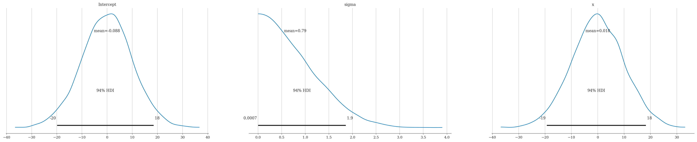

Section 5.4 — Bayesian linear models#
This notebook contains the code examples from Section 5.4 Bayesian linear models from the No Bullshit Guide to Statistics.
See also examples in:
Bambi demos: 01_multiple_linear_regression.ipynb and 02_logistic_regression.ipynb
Notebook setup#
# load Python modules
import os
import numpy as np
import pandas as pd
import seaborn as sns
import matplotlib.pyplot as plt
import bambi as bmb
import numpy as np
import arviz as az
WARNING (pytensor.tensor.blas): Using NumPy C-API based implementation for BLAS functions.
# Figures setup
plt.clf() # needed otherwise `sns.set_theme` doesn"t work
from plot_helpers import RCPARAMS
RCPARAMS.update({"figure.figsize": (9, 5)}) # good for screen
# RCPARAMS.update({"figure.figsize": (5, 1.6)}) # good for print
sns.set_theme(
context="paper",
style="whitegrid",
palette="colorblind",
rc=RCPARAMS,
)
# High-resolution please
%config InlineBackend.figure_format = "retina"
# Where to store figures
DESTDIR = "figures/bayes/lms"
#######################################################
<Figure size 640x480 with 0 Axes>
# set random seed for repeatability
np.random.seed(42)
# silence statsmodels kurtosistest warning when using n < 20
import warnings
warnings.filterwarnings("ignore", category=UserWarning)
Model#
Example 1: students score as a function of effort#
students = pd.read_csv("../datasets/students.csv")
# students.head()
# sns.scatterplot(x="effort", y="score", data=students);
# priors1 = {
# "Intercept": bmb.Prior("Normal", mu=0, sigma=10),
# "x": bmb.Prior("Normal", mu=0, sigma=10),
# "sigma": bmb.Prior("HalfNormal", sigma=1),
# }
priors1 = None
mod1 = bmb.Model("score ~ 1 + effort",
priors=priors1,
data=students)
print(mod1)
idata1 = mod1.fit()
Formula: score ~ 1 + effort
Family: gaussian
Link: mu = identity
Observations: 15
Priors:
target = mu
Common-level effects
Intercept ~ Normal(mu: 72.58, sigma: 116.553)
effort ~ Normal(mu: 0.0, sigma: 12.8061)
Auxiliary parameters
sigma ~ HalfStudentT(nu: 4.0, sigma: 9.6409)
Auto-assigning NUTS sampler...
Initializing NUTS using jitter+adapt_diag...
Multiprocess sampling (2 chains in 2 jobs)
NUTS: [sigma, Intercept, effort]
Sampling 2 chains for 1_000 tune and 1_000 draw iterations (2_000 + 2_000 draws total) took 2 seconds.
We recommend running at least 4 chains for robust computation of convergence diagnostics
az.summary(idata1, kind="stats")
| mean | sd | hdi_3% | hdi_97% | |
|---|---|---|---|---|
| sigma | 5.411 | 1.211 | 3.383 | 7.623 |
| Intercept | 32.400 | 7.029 | 19.336 | 45.513 |
| effort | 4.508 | 0.769 | 3.134 | 5.974 |
az.plot_posterior(idata1);
{kind=link}
import xarray as xr
idata = az.load_arviz_data('regression1d')
x = xr.DataArray(np.linspace(0, 1, 100))
idata.posterior["y_model"] = idata.posterior["intercept"] + idata.posterior["slope"]*x
az.plot_lm(idata=idata, y="y", x=x);
{kind=link}
# az.plot_ppc(idata2_rep, group="posterior")
import xarray as xr
# Generate samples form the posterior predictive distribution
mod1.predict(idata1, kind="response")
# Calculate the model mean
post1 = idata1["posterior"]
efforts = students["effort"]
post1["score_model"] = post1["Intercept"] + post1["effort"] * xr.DataArray(efforts)
# Plot
# az.plot_lm(y="score", idata=idata1, x=efforts);
# az.plot_lm(y="score", idata=idata1, y_model="score_pred", x=efforts);
az.plot_lm(y="score", idata=idata1, y_model="score_model", x=efforts, kind_pp="hdi", kind_model="hdi");
{kind=link}
# compare with statsmodels results
import statsmodels.formula.api as smf
smf.ols("score ~ 1 + effort", data=students).fit().summary().tables[1]
| coef | std err | t | P>|t| | [0.025 | 0.975] | |
|---|---|---|---|---|---|---|
| Intercept | 32.4658 | 6.155 | 5.275 | 0.000 | 19.169 | 45.763 |
| effort | 4.5049 | 0.676 | 6.661 | 0.000 | 3.044 | 5.966 |
Example 2: doctors sleep scores#
doctors = pd.read_csv("../datasets/doctors.csv")
# doctors.shape
# priors2 = {
# "Intercept": bmb.Prior("Normal", mu=0, sigma=10),
# "x": bmb.Prior("Normal", mu=0, sigma=10),
# "sigma": bmb.Prior("HalfNormal", sigma=1),
# }
priors2 = None
mod2 = bmb.Model("score ~ 1 + alc + weed + exrc",
priors=priors2,
data=doctors)
print(mod2)
idata2 = mod2.fit()
Formula: score ~ 1 + alc + weed + exrc
Family: gaussian
Link: mu = identity
Observations: 156
Priors:
target = mu
Common-level effects
Intercept ~ Normal(mu: 48.0256, sigma: 102.6936)
alc ~ Normal(mu: 0.0, sigma: 5.4214)
weed ~ Normal(mu: 0.0, sigma: 36.7457)
exrc ~ Normal(mu: 0.0, sigma: 10.6572)
Auxiliary parameters
sigma ~ HalfStudentT(nu: 4.0, sigma: 20.3807)
Auto-assigning NUTS sampler...
Initializing NUTS using jitter+adapt_diag...
Multiprocess sampling (2 chains in 2 jobs)
NUTS: [sigma, Intercept, alc, weed, exrc]
Sampling 2 chains for 1_000 tune and 1_000 draw iterations (2_000 + 2_000 draws total) took 3 seconds.
We recommend running at least 4 chains for robust computation of convergence diagnostics
az.summary(idata2, kind="stats")
| mean | sd | hdi_3% | hdi_97% | |
|---|---|---|---|---|
| sigma | 8.260 | 0.492 | 7.340 | 9.165 |
| Intercept | 60.457 | 1.267 | 58.273 | 63.012 |
| alc | -1.800 | 0.073 | -1.928 | -1.658 |
| weed | -1.025 | 0.492 | -1.917 | -0.121 |
| exrc | 1.769 | 0.138 | 1.536 | 2.048 |
az.plot_posterior(idata2);
{kind=link}
# compare with statsmodels results
import statsmodels.formula.api as smf
formula = "score ~ 1 + alc + weed + exrc"
smf.ols(formula, data=doctors).fit().summary().tables[1]
| coef | std err | t | P>|t| | [0.025 | 0.975] | |
|---|---|---|---|---|---|---|
| Intercept | 60.4529 | 1.289 | 46.885 | 0.000 | 57.905 | 63.000 |
| alc | -1.8001 | 0.070 | -25.726 | 0.000 | -1.938 | -1.662 |
| weed | -1.0216 | 0.476 | -2.145 | 0.034 | -1.962 | -0.081 |
| exrc | 1.7683 | 0.138 | 12.809 | 0.000 | 1.496 | 2.041 |
Example 3: Bayesian logistic regression#
via file:///Users/ivan/Downloads/talks-main/pydataglobal21/index.html#15
import bambi as bmb
data = bmb.load_data("ANES")
data.head()
| vote | age | party_id | |
|---|---|---|---|
| 0 | clinton | 56 | democrat |
| 1 | trump | 65 | republican |
| 2 | clinton | 80 | democrat |
| 3 | trump | 38 | republican |
| 4 | trump | 60 | republican |
model = bmb.Model("vote[clinton] ~ 0 + party_id + party_id:age", data, family="bernoulli")
print(model)
idata = model.fit()
Modeling the probability that vote==clinton
Formula: vote[clinton] ~ 0 + party_id + party_id:age
Family: bernoulli
Link: p = logit
Observations: 421
Priors:
target = p
Common-level effects
party_id ~ Normal(mu: [0. 0. 0.], sigma: [1. 1. 1.])
party_id:age ~ Normal(mu: [0. 0. 0.], sigma: [0.0586 0.0586 0.0586])
Auto-assigning NUTS sampler...
Initializing NUTS using jitter+adapt_diag...
Multiprocess sampling (2 chains in 2 jobs)
NUTS: [party_id, party_id:age]
Sampling 2 chains for 1_000 tune and 1_000 draw iterations (2_000 + 2_000 draws total) took 6 seconds.
We recommend running at least 4 chains for robust computation of convergence diagnostics
import pandas as pd
new_subjects = pd.DataFrame({"age": [20, 60], "party_id": ["independent"] * 2})
model.predict(idata, data=new_subjects)
# TODO: try to repdouce
# https://github.com/tomicapretto/talks/blob/main/pydataglobal21/index.Rmd#L181-L193
Explanations#
Discussion#
Exercises#
Exercise: bioassay logistic regression#
Gelman et al. (2003) present an example of an acute toxicity test, commonly performed on animals to estimate the toxicity of various compounds.
In this dataset log_dose includes 4 levels of dosage, on the log scale, each administered to 5 rats during the experiment. The response variable is death, the number of positive responses to the dosage.
The number of deaths can be modeled as a binomial response, with the probability of death being a linear function of dose:
The common statistic of interest in such experiments is the LD50, the dosage at which the probability of death is 50%.
# Log dose in each group
log_dose = [-.86, -.3, -.05, .73]
# Sample size in each group
n = 5
# Outcomes
deaths = [0, 1, 3, 5]
# SOLUTION
import pymc as pm
invlogit = pm.math.invlogit
with pm.Model() as bioassay:
a = pm.Normal('a', 0, 5)
b = pm.Normal('b', 0, 5)
p = invlogit(a + b*np.array(log_dose))
y = pm.Binomial('y', n=n, p=p, observed=np.array(deaths))
LD50 = pm.Deterministic('LD50', -a/b)
bioassay_idata = pm.sample()
import arviz as az
az.summary(bioassay_idata)
Auto-assigning NUTS sampler...
Initializing NUTS using jitter+adapt_diag...
Multiprocess sampling (2 chains in 2 jobs)
NUTS: [a, b]
Sampling 2 chains for 1_000 tune and 1_000 draw iterations (2_000 + 2_000 draws total) took 2 seconds.
We recommend running at least 4 chains for robust computation of convergence diagnostics
| mean | sd | hdi_3% | hdi_97% | mcse_mean | mcse_sd | ess_bulk | ess_tail | r_hat | |
|---|---|---|---|---|---|---|---|---|---|
| a | 0.581 | 0.778 | -0.874 | 2.011 | 0.025 | 0.018 | 956.0 | 1109.0 | 1.0 |
| b | 6.380 | 2.465 | 2.344 | 11.048 | 0.083 | 0.059 | 895.0 | 1248.0 | 1.0 |
| LD50 | -0.083 | 0.134 | -0.333 | 0.165 | 0.004 | 0.003 | 1078.0 | 1058.0 | 1.0 |
Links#
BONUS MATERIAL#
Simple linear regression on synthetic data#
# Simulated data
np.random.seed(42)
x = np.random.normal(0, 1, 100)
y = 3 + 2 * x + np.random.normal(0, 1, 100)
df1 = pd.DataFrame({"x":x, "y":y})
priors1 = {
"Intercept": bmb.Prior("Normal", mu=0, sigma=10),
"x": bmb.Prior("Normal", mu=0, sigma=10),
"sigma": bmb.Prior("HalfNormal", sigma=1),
}
model1 = bmb.Model("y ~ 1 + x",
priors=priors1,
data=df1)
print(model1)
idata = model1.fit()
Formula: y ~ 1 + x
Family: gaussian
Link: mu = identity
Observations: 100
Priors:
target = mu
Common-level effects
Intercept ~ Normal(mu: 0.0, sigma: 10.0)
x ~ Normal(mu: 0.0, sigma: 10.0)
Auxiliary parameters
sigma ~ HalfNormal(sigma: 1.0)
Auto-assigning NUTS sampler...
Initializing NUTS using jitter+adapt_diag...
Multiprocess sampling (2 chains in 2 jobs)
NUTS: [sigma, Intercept, x]
Sampling 2 chains for 1_000 tune and 1_000 draw iterations (2_000 + 2_000 draws total) took 2 seconds.
We recommend running at least 4 chains for robust computation of convergence diagnostics
model1.plot_priors();
Sampling: [Intercept, sigma, x]
{kind=link}

Summary using mean#
# Posterior Summary
summary = az.summary(idata, kind="stats")
summary
| mean | sd | hdi_3% | hdi_97% | |
|---|---|---|---|---|
| sigma | 0.957 | 0.069 | 0.838 | 1.088 |
| Intercept | 3.009 | 0.095 | 2.837 | 3.187 |
| x | 1.858 | 0.104 | 1.669 | 2.055 |
Summary using median as focus statistic#
ETI = Equal-Tailed Interval
az.summary(idata, stat_focus="median", kind="stats")
| median | mad | eti_3% | eti_97% | |
|---|---|---|---|---|
| sigma | 0.953 | 0.048 | 0.840 | 1.095 |
| Intercept | 3.006 | 0.066 | 2.837 | 3.186 |
| x | 1.857 | 0.071 | 1.662 | 2.050 |
# Plotting posterior
az.plot_posterior(idata, point_estimate="mean", round_to=3);
{kind=link}
Investigare further
https://python.arviz.org/en/latest/api/generated/arviz.plot_lm.html
# az.plot_lm(idata)
Simple linear regression using PyMC#
import pymc as pm
# Simulated data
np.random.seed(42)
x = np.random.normal(0, 1, 100)
y = 3 + 2 * x + np.random.normal(0, 1, 100)
# Bayesian Linear Regression Model
with pm.Model() as pmmodel:
# Priors
beta0 = pm.Normal("beta0", mu=0, sigma=10)
beta1 = pm.Normal("beta1", mu=0, sigma=10)
sigma = pm.HalfNormal("sigma", sigma=1)
# Likelihood
mu = beta0 + beta1 * x
y_obs = pm.Normal("y_obs", mu=mu, sigma=sigma, observed=y)
# Sampling
idata = pm.sample()
az.summary(idata)
Auto-assigning NUTS sampler...
Initializing NUTS using jitter+adapt_diag...
Multiprocess sampling (2 chains in 2 jobs)
NUTS: [beta0, beta1, sigma]
Sampling 2 chains for 1_000 tune and 1_000 draw iterations (2_000 + 2_000 draws total) took 2 seconds.
We recommend running at least 4 chains for robust computation of convergence diagnostics
| mean | sd | hdi_3% | hdi_97% | mcse_mean | mcse_sd | ess_bulk | ess_tail | r_hat | |
|---|---|---|---|---|---|---|---|---|---|
| beta0 | 3.009 | 0.094 | 2.835 | 3.182 | 0.002 | 0.001 | 2503.0 | 1395.0 | 1.0 |
| beta1 | 1.858 | 0.110 | 1.659 | 2.074 | 0.002 | 0.001 | 3070.0 | 1625.0 | 1.0 |
| sigma | 0.958 | 0.069 | 0.836 | 1.092 | 0.001 | 0.001 | 3110.0 | 1422.0 | 1.0 |